《前哨》
其他
《前哨》月刊
投稿邮箱
keyboard_arrow_down
欢迎各位读者向以下两个电子邮箱投稿自创文章或者提出意见。使用Protonmail和TunaNota是为了保证我们自己的安全，而为保证您自己的安全，请不要使用国内的写作软件或者电子邮箱服务进行投稿。
leningrad3rdprinting@protonmail.com
leningrad3rdprinting@tunanota.com
《前哨》创刊号
2022.02.07
file_download
Github
Mega
Wordpress
庆祝TKP/ML建党50周年！
在土耳其共产党/马列主义成立 50 周年之际，支持者们在希腊雅典绘制了涂鸦。